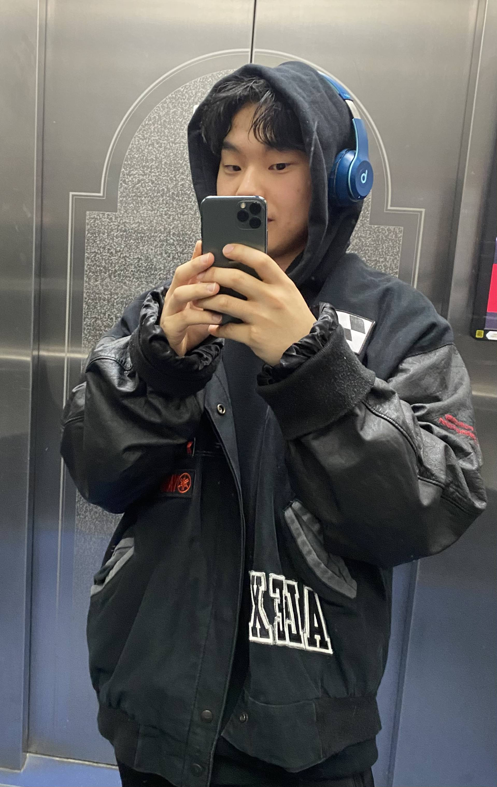

Welcome to the introduction page of Taeyun
I’m an AI Researcher in (AIGEN Science), researching LLM agent for Biomedical Domain. Prior to current position, I studied machine learning under the guidance of Prof. Gyeongsik Yang.
Find more about me:

Research Experience
System Software Laboratory, Korea University (Adviser: Professor Gyeongsik Yang)
Research Intern (Jan.2024 ~)
Participated in Digital Healthcare Project Xalute, focusing on research and development of a wearable-based digital health platform.
Gave poster presentation on Secure Container for Permissioned Blockchains at KICS Summer Conference 2024
Networking & Mobile Systems Laboratory, KAIST (Adviser: Professor Sung-Ju Lee)
Research Intern (Jan.2025 ~ March.2025)
Conducted research on System-Level optimization of LLM, wiretap detection using machine learning methods
Data Mining and Information Systems Lab, Korea University (Adviser: Professor Jaewoo Kang)
Research Intern (March.2025 ~)
Conducting research on mitigating hallucination,LLM agent
Development & Related Experience
Hiconsy
Data Analyst (Jan.2022 ~ Jan.2023)
Worked as a Data analyst in Education Startup Hiconsy which is now one of the biggest education companies in Korea
Performed various tasks, such as mathematical modeling for the TA salary system and regression analysis to examine the correlation between students' study hours and academic performance.
KAIST MADCAMP
Regular participant (July.2023 ~ August.2023)
Developed Java,Swift,Kotlin,Python Game projects
Blurting
Frontend Developer (June.2023 ~ )
Blind Dating App with completely new format App Store link
Ranked 73rd in App Store Social Networking Category in Korea
Aigen Sciences Inc
AI researcher (April.2025 ~ )
- Working as a AI Researcher in AI based drug discover startup Aigensciences
Research for hypothesis generation llm agent in drug discovery Domain
Award
2nd Place in 2023 Korea University Hackathon
-
Developed a mobile application named "Noonchi" that predicts the number of visitors in Han River parks, providing real-time recommendations for less crowded parks based on user preferences.
Check out the project on GitHub
Extracurricular Activities
Korea University Institute of Computer Security
Regular Member (Jan. 2023 ~ Dec. 2024)
- Taught C programming language to freshman for semester
- Gave Lectures and assignments with self made materials on weekly basis
- Participated in study groups for cryptography
Devkor
Regular Member (June. 2023 ~ )
- Participated in the frontend of the Blurting Project using Flutter, enhancing my knowledge of frontend technologies and cross-platform development
For more information about DevKor, visit DevKor's page.
FC COMING
Founder and Captain (June. 2023 ~)
Founder and Captain of Soccer Club in Korea University College of Informatics
Participated in Korea University Sports Soccer League (KU LEAGUE) in 2023,2024
Project
Visual Novel Game 두근두근 카이생의 모쏠 탈출기
Basic CPU Implementation (COSE222 Computer-Architecture)
-
Implemented a basic CPU architecture using SystemVerilog, featuring components such as ALU, instruction memory, data memory, controller, and register file. This project involved designing and simulating a multi-stage pipeline CPU to demonstrate efficient instruction execution.
Technical Skills
Frontend
- Html,css,React,Flutter
Programming Languages
- Python,C,C++,Javascript,Dart
Language
English
TOEIC(940)
Contact
- nrbsld@korea.ac.kr